CIKS Outreach
Events
The Centre for Indian Knowledge Systems regularly conducts demonstrations, workshops, school outreach, and public engagement programs across Assam and the Northeast. This page now sits inside the same main CIKS shell as the team, projects, interns, and contact sections.
Events
CIKS Center
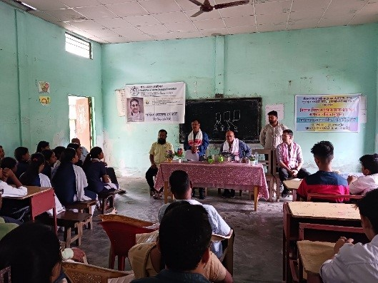
Dwingunpaar (Leza)
Interaction with the students of Pubpar Gandhiji Uchha Madhyamik Vidyalaya
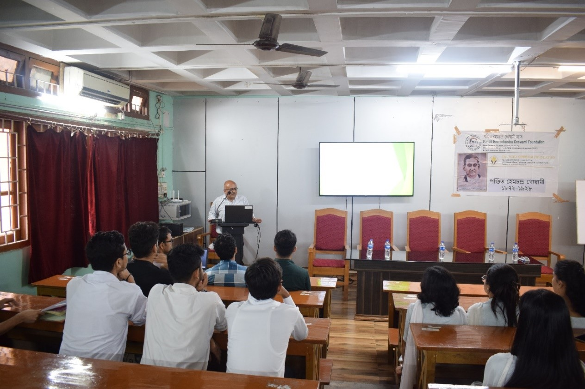
B. Borooah College, Guwahati
A talk on "Role of Mathematics and Statistics in Experimental Study" organized
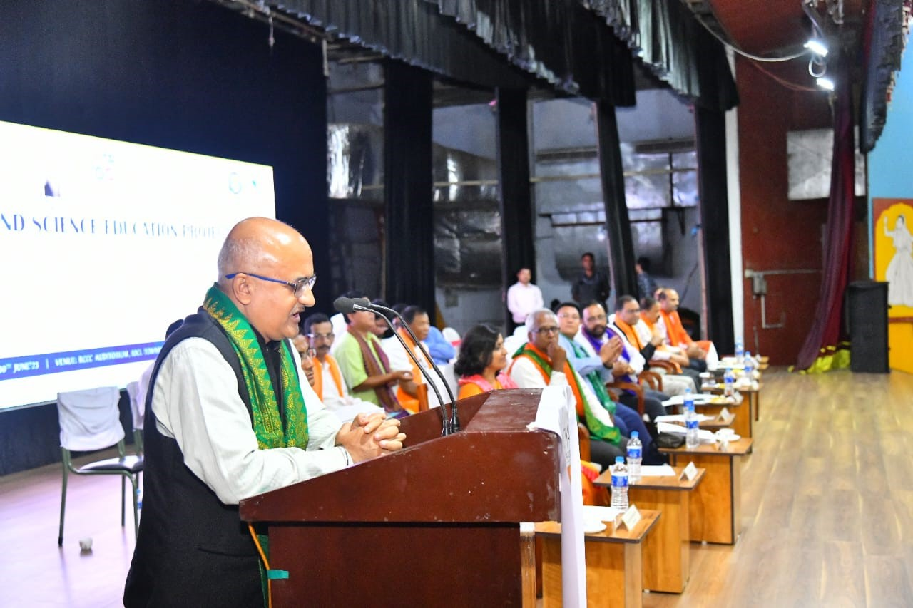
inauguration of Bodoland STEM
Prof. U.S. Dixit mentioning about the project "Pandit Hemchandra Mission for Popularization of Science and Assamese Culture" at the inauguration of Bodoland STEM (Science, Technology, Engineering, Mathematics) Education Program
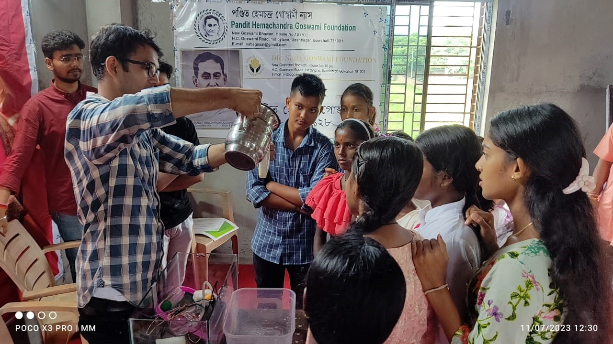
Param Shivam Shiv Mandir
Dr. Faladrum Sharma, Project Officer, demonstrating scientific gadgets to vernacular medium school students of Assam in a 5-day camp
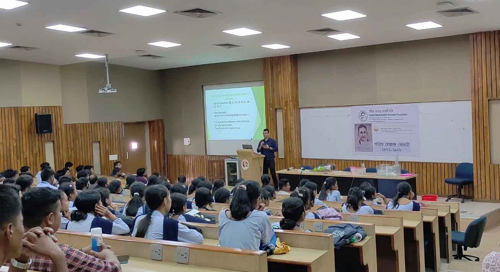
Outreach Education Program (OEP), IIT Guwahati
Dr. Faladrum Sharma along with Mr. Abhijeet Dhulekar and Mr. Kalyan Boro demonstrated the scientific gadgets to 150 Class-11 students of Goreswar Science Academy, Baksa, Assam. The event was organized
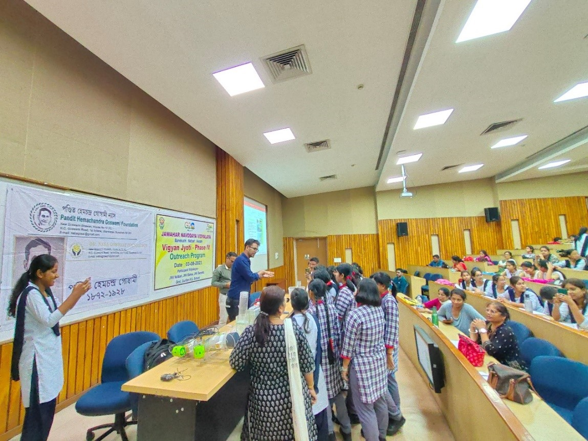
Principal Jawahar Navodya Vidyalaya Rangia
Dr. Faladrum Sharma, Project Officer in "Pandit Hemchandra Mission for Popularization of Science and Assamese Culture" interacting with class 12 students of Jawahar Navodaya Vidyalaya, Rangia. Special thanks to Prof. Achalkumar, Dean (Outreach Education), IIT Guwahati and Mr. MG Aravindakshan.
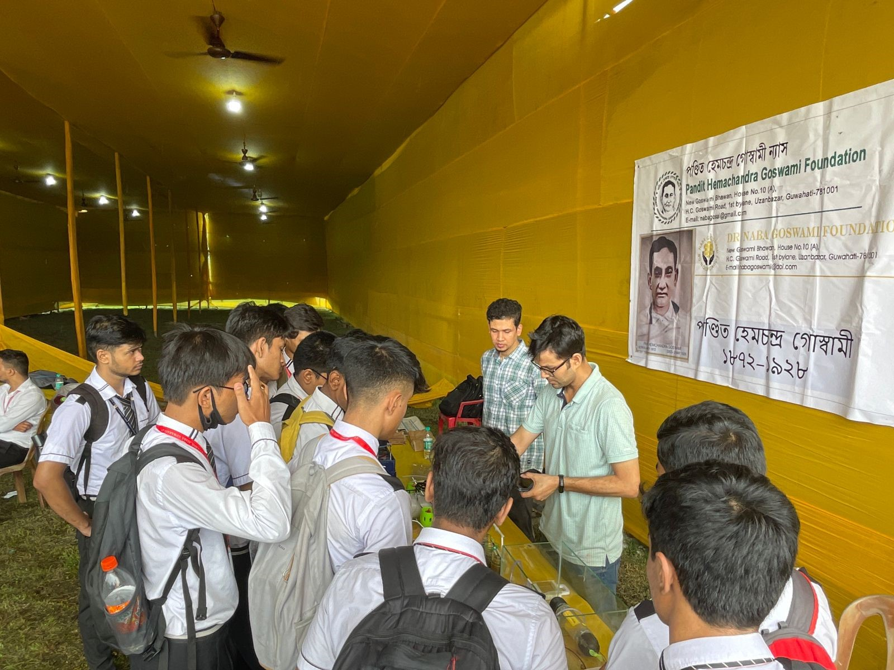
Techniche exhibition, IIT Guwahati.
Dr. Faladrum Sharma, Project Officer in "Pandit Hemchandra Mission for Popularization of Science and Assamese Culture" assisted by Mr. Nilkamal Mahanta displaying the science models to students
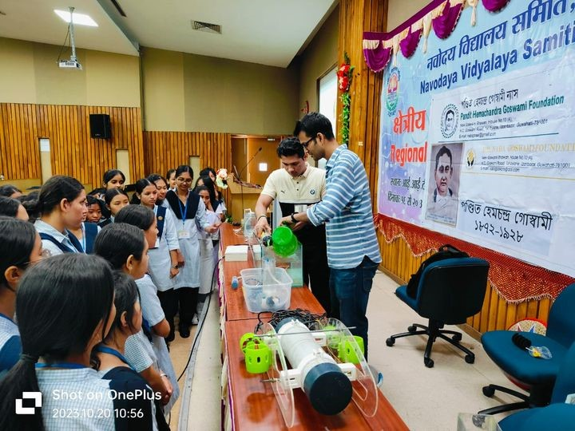
Outreach Education Section of IIT Guwahati
Dr. Faladrum Sharma, Project Officer in Pandit Hemchandra Mission for Popularization of Science and Assamese Culture, assisted by Mr. Abhijeet Dhulekar, showing science models in Regional Children's Science Congress of Navodaya Vidyalaya. About 100 students attended the program organized.
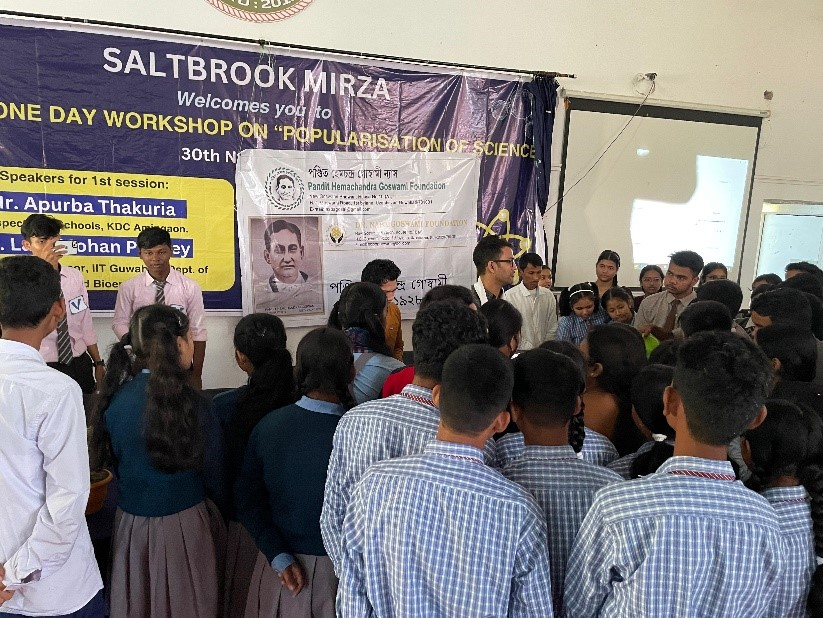
Saltbrook Mirza
One-day workshop on "Popularisation of Science" held at Saltbrook Mirza. Around 120 students of Class 9 and 10 were present.
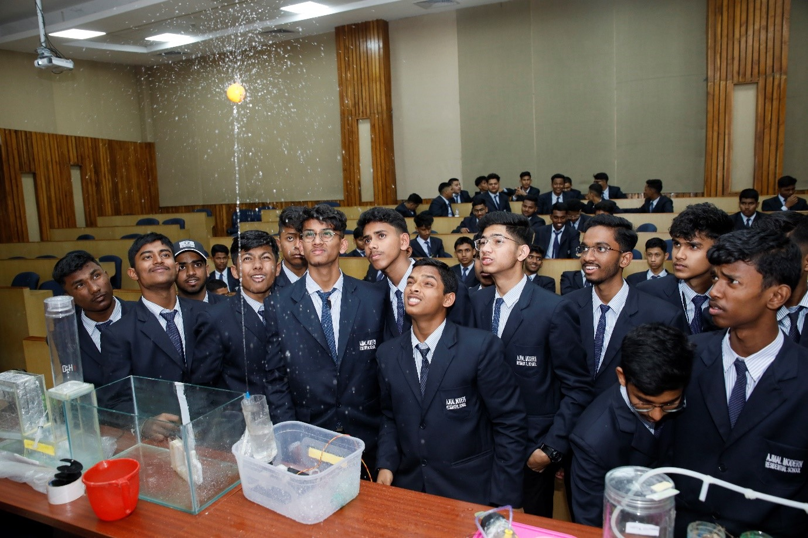
Outreach Section and NSS, IIT Guwahati
Demonstration of gadgets to students of Ajmal Modern Residential School, Hojai. Event was conducted by Outreach Section and NSS, IIT Guwahati
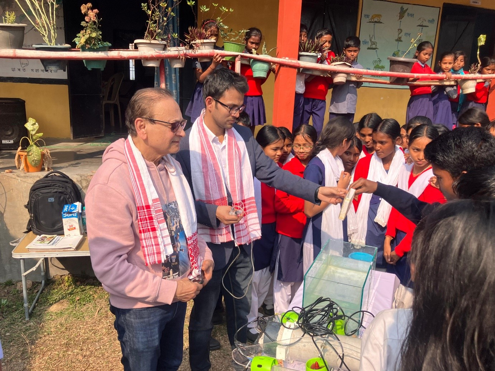
Pandit Hemchandra Goswami Foundation and Dr. Naba Goswami Foundation w
Demonstration of gadgets to the students of Kaziranga National Park High School, Shankardev Sishu Niketan Kohora, Kaziranga Girls High School, Kaziranga National High School. Event was held at Kaziranga, Assam. Dr. Naba Goswami, who is the chairman of the Pandit Hemchandra Goswami Foundation and Dr. Naba Goswami Foundation was present.
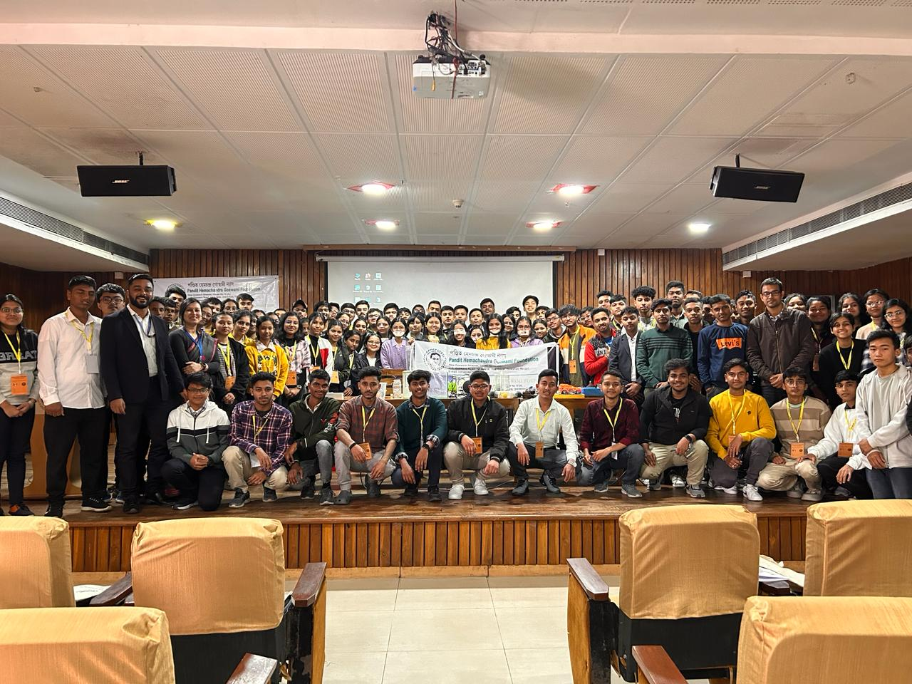
(ASTEC) jointly with IIT Guwahati
Demonstration of gadgets to Class 11 Science stream students from different districts of Assam under the scheme "Mukhya Mantrir Bigyan Pratibha Sandhan" from Assam Science Technology and Environments Council (ASTEC) jointly with IIT Guwahati
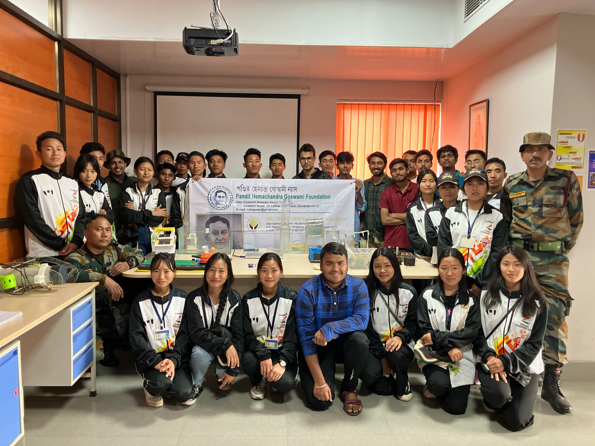
Assam Rifles
Demonstration of gadgets to the students of St. Xaviers College, Jalukie, Nagaland. They were on National Integration Tour sponsored by Assam Rifles.
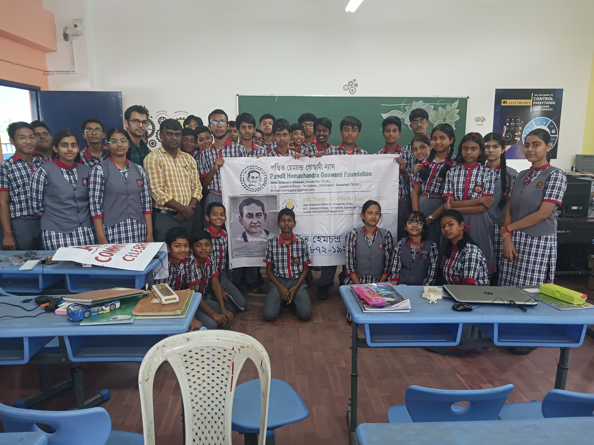
KV IIT Guwahati
Screening of the documentary on Pandit Hemchandra Goswami and demonstration of gadgets on the occasion Punya Tithi of Pandit Goswami at KV IIT Guwahati.
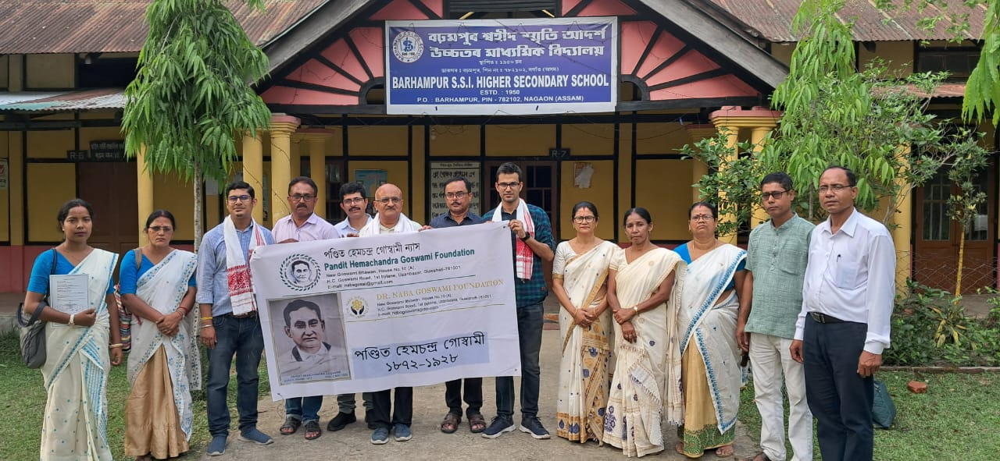
Barhampur, Nagaon
Demonstration of gadgets to the students of Barhampur Swahid Smriti Adarsha Girls High School, Gyani Jyoti Jatiya Vidyalaya, Barhampur Shahid Smriti Higher Secondary School and Sankardev Sishu Niketan Barhampur. Event was held at Barhampur, Nagaon.
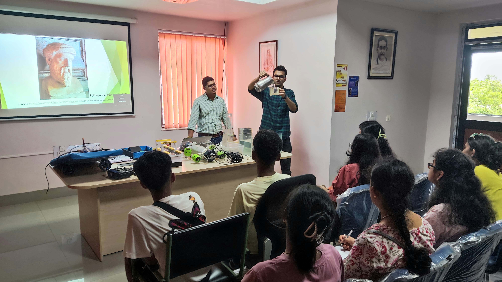
Army Public School, Shillong
Demonstration of gadgets to the students of Class 12 (Science stream) Army Public School, Shillong. Event was conducted by Outreach Section.